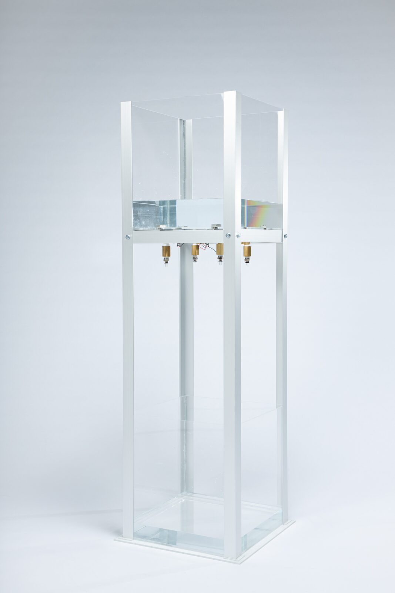
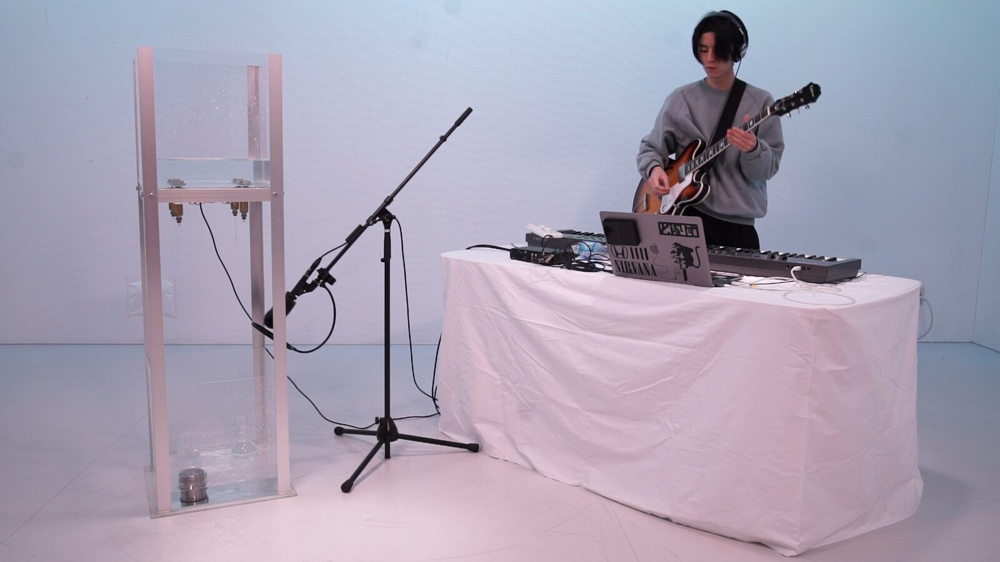
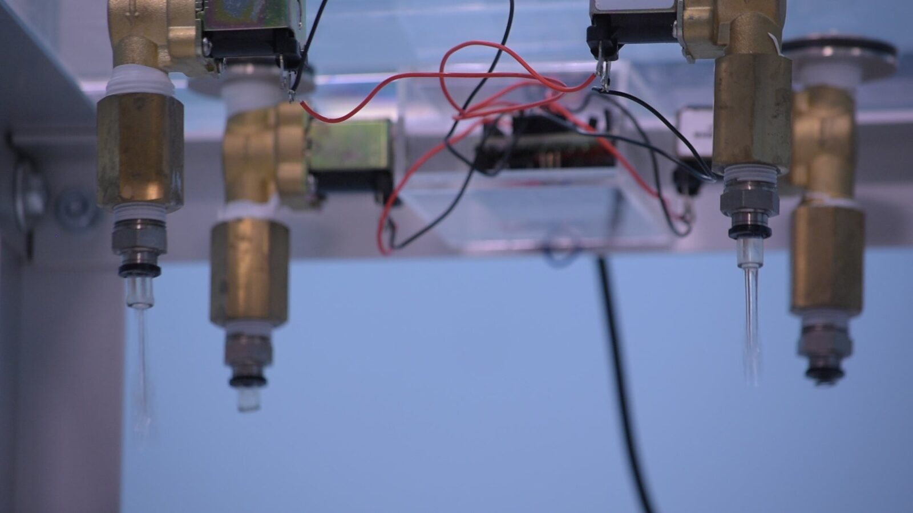

Potarhythm
PROJECT DESCRIPTION
Potarhythm is a MIDI-controlled musical performance device that uses the sound of water droplets colliding with an object as its sound source. The frequency of the water droplet sound is determined by the combination of the diameter of the droplet and the velocity at which it lands. I have developed a water droplet generation mechanism that controls the droplet diameter by electrically controlling the opening and closing of a solenoid valve. I used this mechanism to roughly control the pitch and volume of the water droplets and also used it as a MIDI sound source to enable music sequencing and real-time performance. Potarhythm can extend the tone by changing the objects that collide with the water droplets.


Fig. 1. Image of Potarhythm
Images and sounds of flowing water, ripples on the surface of the water, and ripples are called ASMR (Autonomous Sensory Meridian Response) and are appreciated as one of the phenomena that induce a state of euphoria and relaxation. In Japanese gardens, there are also examples of decorations using water, such as Suikinkutsu and Shishiodoshi. These are created to appreciate the movement and sound of water. In the field of musical works, various artists have presented works using the sound of water. For example, Junichi Kamiyama in 1989, and Cornelius in 2001 and 2016 have presented works that use the sound of water. Water sounds can be used as a method of musical expression. However, not much reproducible information has been published on how to record and perform live water sounds. I wanted to create a musical performance using not only sampled sounds but also sounds generated by the physical phenomenon of water droplets using real water.
In this performance, I combined not only the real-time sound of Potarhythm but also reverb, delay, and looping to create more complex rhythms. This performance was also a combination of guitar and synthesizer to create and perform ambient music. I created the music to create a sound that expresses a sense of floating and instability.


Fig. 2. Performance Scene 1


Fig. 3. Performance Scene 2
PROGRAM NOTES
Potarhythm is a musical instrument that plays a rhythm with the sound of water droplets falling and landing on water, or the sound of water droplets colliding with an object, such as rain. The sound of water droplets is one of the many environmental sounds we hear in caves, drops falling from leaves, rain, etc. If you like the sound of water, you will love this instrument. There are a certain number of people who like the sound of water.
The sound of the water drops is analog. Also, since this work can be controlled by MIDI, the interface is also left to the performer. I combined the sound of water droplets from Potarhythm with the unstable reverberation of a guitar and a synthesizer to create and perform ambient music.
PERFORMANCE REQUIREMENTS
List of Equipment
Potarhythm
MacBook Pro
Mic (sony)
Mic stand
Electric Guitar
Guitar stand
Audio Interface (MOTU M4)
MIDI Keyboard 88 keys (NEKTOR Impact 88)
MIDI controller (KORG nano Kontroll2)
Cables
Conflict Material
Bucket (for carrying water)
Water
Space Requirement
4m*3m
A little splash of water around.
Quiet space
Performer
Author
MEDIA
ACKNOWLEDGEMENTS
The author would like to thank Tetsuaki Baba, Interface Design Studio in Tokyo Metropolitan University, and also other people who have been giving the author feedback and inspiration for his project.